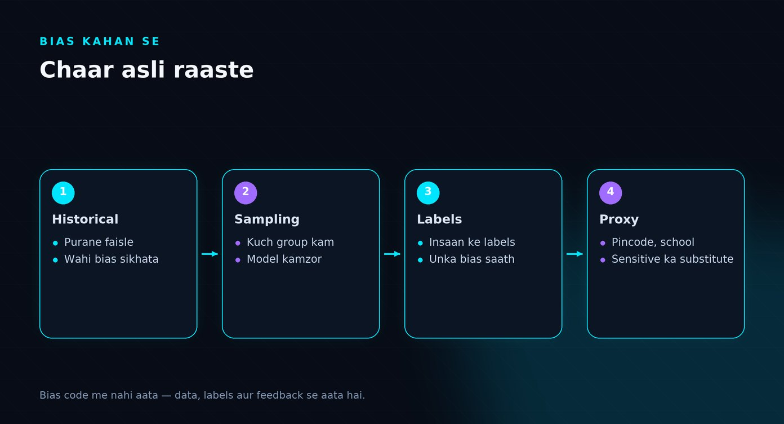

AI Ethics aur Bias: Business Ke Liye 7 Practical Checks
Ek company ne AI-based hiring tool lagaya. Model ne purane successful employees ka data seekha aur naye candidates ko score karna shuru kiya. Do mahine baad HR ne notice kiya ki ek hi college se aaye candidates ko score zyada mil raha hai. Model ne “college” dekha hi nahi tha — usne pincode, internship ke naam aur hobbies se wahi pattern pakad liya. Yeh technical bug nahi tha. Yeh bias tha, aur woh data se aaya tha, code se nahi.
AI ethics par baat aksar bahut badi aur abstract ho jati hai — “responsible AI”, “human-centred design”, “algorithmic fairness”. Par jab aap ek chhoti team me product bana rahe hain, to aapko roz ke faisle chahiye: kaun sa data nahi lena, kaun se feature hatane hain, kaise test karna hai, aur kya likhkar rakhna hai. Is guide me wahi hai — saat seedhe checks, ek audit template, aur India ke DPDP Act ka practical context.
Chhota jawab: AI bias tab hota hai jab model kisi group ke saath systematic tarike se galat ya unfair behave karta hai — kyunki uske training data me purana bias tha, sample chhota tha, labels subjective the, ya koi proxy feature asli cheez ki jagah le raha tha. Ethics ka matlab sirf compliance nahi — yeh product ka bharosa, retention aur legal risk ka seedha sawaal hai. Saat checks: purpose, data audit, proxy features, subgroup testing, explainability, human override, aur monitoring.
Ethics, bias aur fairness — teen alag cheezein
Bias ek technical pattern hai: model ka output kisi group ke liye systematically alag hai. Fairness ek choice hai ki kaunsa farq acceptable hai aur kaunsa nahi — yeh business aur society ka faisla hai, math ka nahi. Ethics usse bhi bada sawaal hai: kya yeh kaam karna hi chahiye, chahe woh fair ho?
Ek example se farq saaf hota hai. Loan model me agar women ko kam approval milta hai, to woh bias hai. Agar data ke hisaab se woh farq justified hai (income, credit history ke baad bhi), to fairness ka sawaal khulta hai — kya historical income gap ko model aur gehra karna chahiye? Aur agar product poor households ko target karta hai jahan repayment capacity kam hai, to ethics ka sawaal hai — kya aise loan offer karna hi theek hai?
Teenon ko ek saath dekhna zaroori hai. Sirf bias fix karke model “fair” nahi ho jata, aur sirf policy likhkar model sahi nahi ho jata. Dono chahiye.
Bias ke paanch source
1. Historical data. Agar purane faisle biased the, model wahi bias seekh lega. Hiring, lending aur policing ke data me yeh sabse aam hai.
2. Sampling gap. Agar training data me kisi group ke 50 examples hain aur doosre ke 50,000, to model pehle group par kamzor hoga. Yeh face recognition, speech (Indian accents!) aur regional language models me roz dikhta hai.
3. Label bias. “Achha employee”, “risky customer”, “toxic comment” — yeh labels insaan dete hain, aur unke apne bias saath aate hain. Model ko lagta hai ki woh objective sach seekh raha hai.
4. Proxy features. Jaat, dharm, gender, disability hatane se bias nahi jata. Pincode, school, language, device, naam — yeh sab unka proxy ban jate hain. Yahi pehle example me hua tha.
5. Feedback loop. Model jo predict karta hai, wahi aage ka data banta hai. Agar model ne kisi area me kam police bheji, to wahan crime ka data kam aayega, model aur kam bhejega. Yeh loop khud ko strong karta rehta hai.

Saat practical checks
Yeh checks ek chhoti team ek hafte me kar sakti hai. Har check ka ek output hona chahiye — document, test, ya code change — warna woh sirf baithak ban jayega.
1. Purpose likho — aur “nahi karenge” bhi. Ek page par likho: model kya faisla karega, kaun use karega, aur kaun se faisle iske haath me nahi jayenge. Yeh aakhri hissa sabse zaroori hai. “Yeh model loan reject nahi karega, sirf officer ko priority dikhayega” — aisa statement baad me bahut bachata hai.
2. Data audit karo. Har group ke examples ginno — gender, region, language, income band, disability. Jo group 1% se kam ho, uske liye alag se data jama karo ya model ko us group par “kaam nahi karta” likho. Chhupa hua group sabse bada risk hai.
3. Proxy features hatao — aur test karo. Sensitive columns hataane ke baad, unke proxies dhoondho. Sabse seedha test: model se ek feature hata kar dekho, score kitna badalta hai. Agar pincode hatane se kisi group ka score 20% girta hai, to pincode proxy hai.
4. Subgroup par naapo. Overall accuracy ke saath har group ki accuracy, precision aur recall alag naapo. 90% overall me 70% kisi group ke liye chhup sakta hai. Yeh woh check hai jo sabse zyada asli problem pakadta hai.
5. Explainability do. Har faisle ke saath kam se kam 3 kaaran dikhao — “income, existing EMIs, aur repayment history ki wajah se”. User ko appeal ka raasta do, aur support team ko batao ki refund/review kaise hota hai. Black box + no appeal = regulator aur customer dono ke saath problem.
6. Human override rakho. High-stakes faisle me insaan ka final word ho. Aur design aisa ho ki insaan model ko override kar sake — agar UI me sirf “approve” button hai, to override ka paper par hona bekaar hai.
7. Monitor karo, ek baar nahi. Har mahine subgroup metrics dekho, aur data drift ke saath bias drift bhi dekho. Naya data aane par purana bias wapas aa sakta hai, khaas kar feedback loop wale systems me.
Fairness metrics: ek nahi, kai
Yahan ek dukhad sach hai — saare fairness metrics ek saath satisfy nahi ho sakte. Demographic parity kehta hai har group ka approval rate barabar ho. Equal opportunity kehta hai jinko loan milna chahiye tha, unme se har group me barabar hissa mile. Predictive parity kehta hai score ka matlab har group me same ho. Yeh teenon ek saath nahi ho sakte jab base rates alag hon — yeh mathematically proven hai.
Isliye sawaal “kaun sa metric sahi hai” nahi, “hamare case me kaun sa galat zyada mehnga hai” hai. Loan me equal opportunity aksar chunta hai — jo genuine default nahi karega use loan mile. Content moderation me demographic parity zyada sensible ho sakta hai. Yeh faisla business, legal aur user research ke saath milkar hota hai, aur likhkar rakha jata hai.
Ek practical cheez: metrics ko dashboard par rakho, ek baar report me nahi. Jo number dashboard par nahi hota, woh ignore ho jata hai — chahe woh kitna hi important ho.
India ka context: DPDP Act
Digital Personal Data Protection Act, 2023 India me personal data ke liye basic framework deta hai — consent, purpose limitation, data minimisation, aur data principal ke rights. AI product ke liye iske teen seedhe matlab hain. Pehla — jo data aap model train karne ke liye le rahe hain, uske liye consent aur purpose saaf hona chahiye. Doosra — jitna data chahiye utna hi lo; “baad me kaam aayega” ke liye sab kuch jama karna risk hai. Teesra — user ko apne data ke baare me jaankari aur correction ka raasta milna chahiye.
Iske alawa sector regulators apne niyam dete hain — banking, insurance, securities aur health ke liye alag guidance hoti hai. Isliye apne legal team se poochho ki aapke sector me kya lagu hai; yahan di gayi baat general framework hai, legal advice nahi.
Ek practical kadam jo abhi kar sakte hain: data ka ek register banao — kaun sa data, kahan se, kis purpose ke liye, kitne din rakhenge, aur kaun access karega. Yeh register DPDP ke liye bhi kaam aata hai aur AI audit ke liye bhi.
Ek chhota audit template
Yeh table aap apne project ke liye copy kar sakte hain. Har row ka ek owner hona chahiye.
| Check | Sawaal | Artifact |
|---|---|---|
| Purpose | Model kya decide karega, kya nahi? | 1-page note |
| Data | Kaun se group kitne hain? | Group counts |
| Proxy | Kaun se feature sensitive cheez ka substitute hain? | Feature test |
| Subgroup | Har group ka precision/recall? | Metric table |
| Explain | User ko kaaran aur appeal milta hai? | UI + policy |
| Override | Insaan faisla badal sakta hai? | Workflow |
| Monitor | Bias drift kaun dekhta hai? | Dashboard |
Is table ko release checklist me daal dein. Jab tak yeh bhara na ho, model production me na jaye — chahe woh 99% accurate ho. Yeh ek chhoti si process hai, par isne mere dekhe hue projects me sabse zyada bachaav kiya hai.
Ethics ka business case
Kuch log ise “compliance ka kharch” samajhte hain. Mera experience ulta hai. Bias pakadne wale checks product quality bhi sudharte hain — kyunki jo model ek group par kamzor hai, woh aksar kai edge cases par bhi kamzor hai. Subgroup testing se hi humne ek baar pata lagaya ki model ne accent wale audio par 30% kam accuracy di thi; wahi fix poore product ka accuracy badha gaya.
Doosra — bharosa. Ek bank ne apne loan model ke kaaran dikhane shuru kiye, aur customer complaints 40% gir gaye. Log naraz nahi the ki loan nahi mila; woh naraz the ki koi kaaran nahi bata raha tha. Transparency sasta hai aur asar bada.
Teesra — legal risk. Ek galat faisla ek case ban sakta hai; systematic bias ek class action. Aur India me DPDP ke baad data handling par bhi sawaal aayenge. Audit ka kharch uske saamne bahut chhota hai.
Mera anubhav
Ek support-routing model par kaam karte waqt humne dekha ki Hinglish tickets Hindi tickets se 2 ghante zyada wait kar rahe the. Accuracy theek thi — routing sahi department me ho raha tha. Problem yeh thi ki Hinglish tickets ko “mixed language” mark karke ek hi slow queue me daala ja raha tha.
Yeh bias tha, par kisi sensitive attribute par nahi — language par. Hamare fairness review me sirf gender aur region the. Us din humne apne subgroup list me language aur script add kiya. Seekh: bias har jagah ho sakta hai, aur aapko pehle se tay karna padta hai ki kaun se groups dekhne hain — warna aap sirf woh dekhenge jo aapne socha tha.
Doosri sikh — “model ne kaha” wala jawab support team ke liye kaafi nahi hota. Jab humne har routing ke saath ek chhota kaaran dikhaya (“language mix detected, specialized queue”), team ne khud hi 3 mahine me queue design badal diya. Explainability sirf compliance nahi, product feedback ka ek source hai.
Nateeja
AI bias data, labels, sampling aur feedback loop se aata hai — code se nahi. Ethics ka matlab sirf niyam nahi, product ka bharosa hai. Saat checks — purpose, data audit, proxy test, subgroup metrics, explainability, human override aur monitoring — ek hafte me ho jate hain aur ek page ke document me likhe ja sakte hain.
Fairness metrics me koi perfect choice nahi hoti; business ke saath milkar woh chuno jo aapke case me sabse zaroori ho, aur likh kar rakho ki kyun. Aur sabse zaroori — checks ko release process me daalo, warna woh sirf slides me rahenge.
Aage padhein: AI model evaluation — subgroup metrics kaise naapein; AI readiness checklist — shuru karne se pehle ka poora framework; aur LLM hallucination — reliability ka doosra bada risk.
अक्सर पूछे जाने वाले सवाल
Kya sensitive column hata dene se bias chala jata hai?
Nahi. Pincode, school, language jaise features proxy ban jate hain. Hatane ke baad test karo ki score kis group par badalta hai.
Fairness ka sabse achha metric kaunsa hai?
Universal nahi. Saare metrics ek saath satisfy nahi hote. Business ke hisaab se chuno aur likh kar rakho ki kyun.
Chhoti team ke liye minimum kya karna chahiye?
Subgroup metrics ka table aur ek release checklist. Yeh do cheezein 80% risk pakad leti hain.
Kya AI ethics sirf bade companies ke liye hai?
Nahi. Chhoti team ka ek galat model poore product ka bharosa kharab kar sakta hai — aur unke paas legal team kam hoti hai.
DPDP Act AI model par lagu hota hai?
Haan, jahan personal data process hota hai. Consent, purpose limitation aur data minimisation ka dhyan rakhein; sector rules alag se check karein.